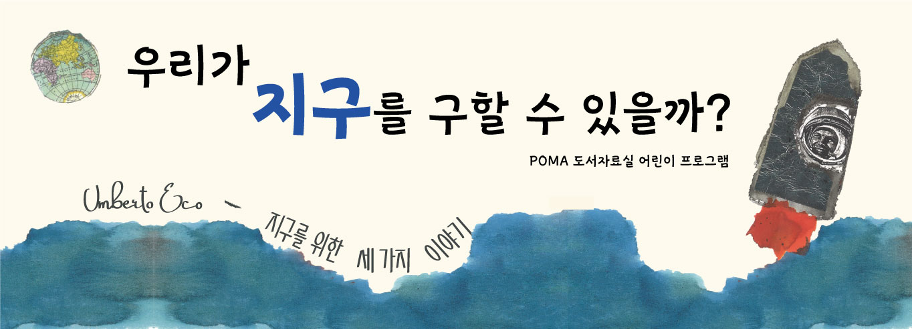

2022 POMA 도서자료실 어린이 교육프로그램
포항시립미술관에서는 <2022 상반기 POMA 도서자료실 어린이 프로그램>을 개최합니다.
미술관 도서자료실은 전시와 관련된 자료를 열람하고 심층적인 미술정보 서비스를 이용할 수 있는 미술 전문 도서관으로서 관람객에게 보다 깊이 있는 미술 향 유의 기회를 제공하고자 합니다.
이에 도서자료실 어린이 프로그램은 도서자료실의 활성화와 어린이들의 책 읽기에 흥미를 유 발하고자 책과 미술이 접목된 프로그램을 매년 2회 진행하고 있습니다. 이번 도서자료실 프로그램은 <움베르토 에코의 지구를 위한 세 가지 이야기> 도서의 인문적·시각적 요소를 활용하여 어린이들에게 문명의 발전에 따른 자연 훼손에 대한 교육적 주 제를 전달하고,
시야를 넓혀 범지구적 관점에서 세상을 바라보도록 사고의 확장과 실천에 대한 동기부여 기회를 제공하여 미 래 지구환경에 대한 책임 있는 태도를 기를 수 있을 것입니다.￭ 교육대상 : 초등학생(3-6학년) 총 40명
￭ 학년별 교육일정 : 2월 22일(화) : 초등 3~4학년 오전반 10명 10:00~12:00, 오후반 10명 : 14:00~16:002월 23일(수) : 초등 5~6학년 오전반 10명 10:00~12:00, 오후반 10명 : 14:00~16:00
￭ 교육방식 : 비대면 교육(zoom, 실시간 온라인 쌍방향 수업, 교육연계 챌린지 활동), 수업용 재료 키트 및 교육 상세 관련 보호자 가이드 우편배송 예정
￭ 교육활용도서 : 「움베르토 에코의 지구를 위한 세 가지 이야기」 글 : 움베르토 에코(이탈리아 철학자, 기호학자, 교수), 그림 : 에우제니오 카르미, 펴낸 곳 : 도서출판 꿈터
￭ 교육내용 : 책을 기반으로 한 워크시트 활동 및 토론(온라인), 개별 환경 캘린더 챌린지 수행(오프라인)
￭ 신청방법 : 미술관 홈페이지 사전 신청 후 참여, 2월 11일부터 선착순 마감 (접수 시작 시간 오전 10:00 정각부터)
※ 신청 시 '내용'란에 학생명, 학년, 참여일시, 전화번호를 필히 남겨주세요. (미기입시 신청 미승인 처리됨)
￭ 문의 : 054-270-4706
<사전 안내>
· 본 교육은 미술관 직접 방문이 아닌 화상회의 프로그램 줌(ZOOM)을 활용한 온라인 프로그램입니다.
· 강의 녹화, 화면 캡처, 녹음, 녹취 등의 유출 방지 서약 및 개인정보 활용 동의는 프로그램 참여로 대체합니다.
· 신청 시 '연락처'란에는 개인 연락처를 꼭 남겨주세요(줌 수업 참여방법 및 참여링크 전송 예정)
· 간혹 시스템 불안으로 인한 일시적인 접속장애 등이 발생할 수 있습니다.
· 부득이한 사정으로 참여할 수 없는 경우 늦어도 하루 전까지 연락 부탁드립니다.(노쇼 금지)
· 촬영한 사진은 미술관 홍보 및 연구, 발간자료 등에 활용될 수 있습니다.
<<< 신청시 주의사항 >>> 반드시 읽어주세요.
· 프로그램 신청 전 반드시 홈페이지 회원가입을 해주셔야합니다.
· 등록여부는 ‘마이페이지’ ---> ‘신청히스토리’에서 확인 가능합니다.
*별도의 연락은 드리지 않습니다. 수강 여부는 미술관의 승인을 거쳐야하니 수강신청 후 1~3시간 뒤 확인 가능합니다.